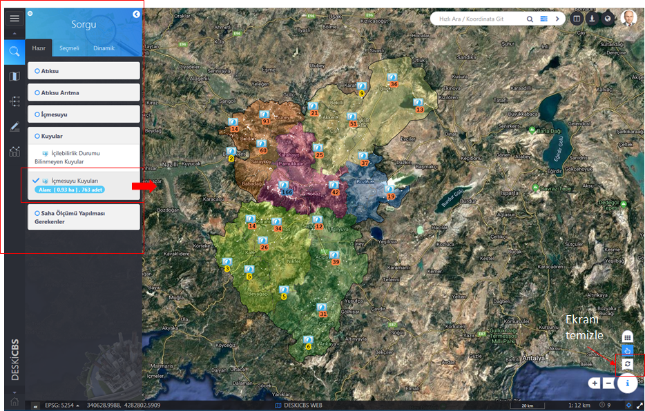
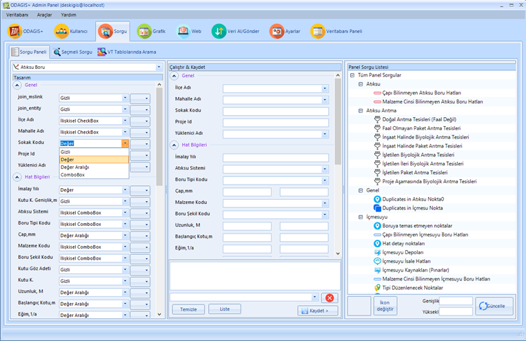

ODAGIS+ Web arayüzünde solda bulunan panelde 1. Sekmede Hazır Sorgular yer almaktadır. Hazır sorgular Yönetici arayüzünden aşağıda tarif edildiği şekilde kod yazmadan hazırlanıp isim verildikten sonra yetki verilen kullanıcıların istifadesine sunulmaktadır.
 Kullanımı:
Kullanımı:
1- Hazır sorgu arayüzünde kategoriler halinde listenen sorgulardan istenilen sorgu işaretlenir.
2- Harita ekranında sorgu sonuçları ikon ve sayıları ile birlikte gösterilir.
3- Aynı zamanda sorgu sonucu dönen objelerin toplam sayı, uzunluk ve alan bilgileri(objenin nokta, çizgi, poligon olması durumuna bağlı) hemen sorgu adının altında görüntülenir. Böylelikle sorgu sonucu ile ilgili hızlı bir şekilde metraj bilgisine ulaşılabilir.
4- Panelden birden fazla sorgu işaretlenip, sorgu sonuçları harita ekranında birlikte görüntülenebilir.
5- Ekrandaki sorgu sonuçlarını temizlemek için işaretli sorgu(ların) üzerine tekrar tıklayıp işaretlemeyi kaldırmak, ya da sadece sağ alt köşedeki "Temizle" butonuna tıklamak gerekir.

Not : Yönetici Paneli'nden "Hazır(Panel) Sorgu" Oluşturma İşlemi
Herbir coğrafi tabaka için mevcut sütunların listelendiği sağ bölümde, herbir sütun için seçme kutusundan seçilecek değere göre kullanıcı arayüzünde görüntülenecek sorgu arayüzü oluşturulmaktadır. Oluşturulan sorgulara isim verip aynı zamanda Panel Sorgu listesine kaydedilebilmektedir.
Sütunların tipine göre ;
Gizli > görüntülenmez, gizlenir
Değer > değer/tarih girilmesi istenir
Değer Aralığı > min ve max değer/tarih girilmesi istenir
İlişkisel Combobox > farklı bir tablodaki ilişkisel değerlerin seçme kutusundan seçilmesi istenir.
İlişkisel Checkbox > farklı bir tablodaki ilişkisel değerlerin işaretleme kutularından işaretlenmesi istenir.
